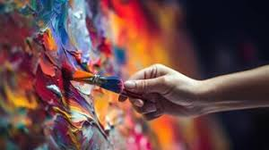

About Us
MISSION
Our mission is to create an accessible and engaging online space where art lovers from around the world can explore diverse collections and connect with creative expressions. We aim to bridge the gap between artists and audiences by offering interactive exhibits and educational content that inspire curiosity and dialogue. By leveraging innovative digital tools, our virtual gallery seeks to democratize art appreciation and celebrate cultural diversity. Ultimately, we strive to empower individuals to experience and share art in a dynamic and inclusive environment.
HISTORY

The history of virtual art gallery websites began in the late 1990s as the internet opened new ways to share art online. Early platforms displayed digital images of artworks, allowing more people to enjoy art without visiting physical museums. Over time, these websites evolved with interactive features and detailed information to offer a more engaging experience. Today, virtual galleries provide worldwide access to art collections and continue to innovate how art is experienced and appreciated.